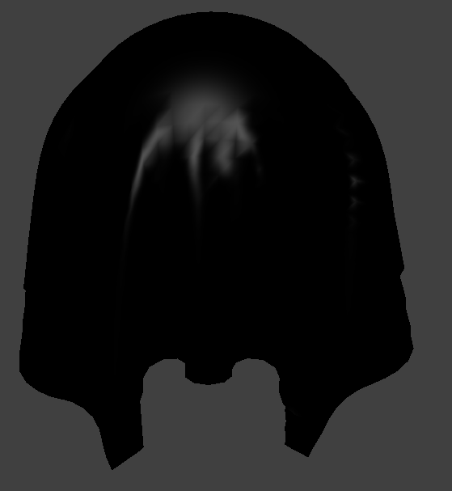

CS184/284A Spring 2025 Homework 4 Write-Up
Link to webpage: cal-cs184-student.github.io/hw-webpages-ilovethomas/hw4/
Link to GitHub repository: github.com/cal-cs184-student/sp25-hw3-ilovethomas-4
Overview
Give a high-level overview of what you implemented in this homework. Think about what you've built as a whole. Share your thoughts on what interesting things you've learned from completing the homework.Part 1: Masses and springs
Cloth Wireframe


Cloth Wireframe with Varying Constraints


Part 2: Simulation via numerical integration
Experimenting with parameters of the simulation
Spring Constant(ks)

|

|

|

|

|

|
ks represents the spring constant and represents how stiff as spring is. The higher the spring constant, the stiffer the spring is. What this means for the cloth is that, the higher the ks, the stiffer the cloth.
This can be seen in the photos above. When ks = 500 N/m, the spring is at its most elastic, which is why the cloth has the most folds and wrinkles as it falls and at its rest state out of all the runs. At ks = 5000 N/m, the cloth has only subtle folds as it falls and only loses the smaller folds that were in ks = 500 N/m's rest state. At ks = 50000 N/m, there are almost no folds at all when it is mid falling and only one fold at its rest state. The curvature at the top of the cloth is also much less compared to the previous runs.
Density

|

|

|

|

|

|
Density plays a role in calculating the masspoints' acceleration. This is because According to Newton's laws, mass is given by m = ρ · V and acceleration by F = m/a, where ρ is equal to density. This means that the greater the density, the greater the force, because acceleration is constant.
This can be observed in the images above. When density = 1 g/cm^2, the cloth is basically smooth with no wrinkles when it is falling and at its rest state. The top of the cloth is almost horizontal. As density increases, and thus force, more wrinkles and folds are created. The top of the cloth resembles more of a parabola now. At density = 15 g/cm^2, the cloth has mild folds at both the mid fall and rest state. When density = 50 g/cm^2, the cloth has the most pronounced folds and the greatest curvature at the top middle of the cloth.
Damping

|

|

|

|

|

|
Damping is the process where energy is lost in the environment. If damping, or d=0%, this means that no energy is lost. If d is greater than 0, this means that energy is lost. The rate energy is lost increases as d increases.
This loss of energy can be observed with the various runs of the pinned cloth. When d is equal to 0%, the mass points, dont lose energy, which is why as it is falling, there is much more vibrations and wrinkles, indicating more energy. It also falls very fast, almost instantly, and continues to oscillate, never coming to rest. As d goes up, the amoount of wrinkles decreases. When d = 0.2%, the cloth has fewer sharp wrinkles compared to when d = 0%, and the final rest state has softer folds. The extreme is when d = 1%. As it is falling, it appears to be almost completely smooth and when it is at rest, it lacks the subtle folds that d = 0.2% had. It falls much slower and comes to rest without any extra swinging.
Cloth with 4 Pins in its Resting State (Default Parameters)


Part 3: Handling collisions with other objects
Implementation of collisions of planes and spheres
Spheres
For sphere collision handling, our implementation is as follows. First we calculate the vector difference between the point mass position and the sphere's origin, or center. If this difference's magnitude is greater than the sphere's radius, there's no collision, and the function returns immediately. If the difference's magnitude is less than or equal to the sphere's radius, a collision is detected, and the code continues on. We then calculate a unit direction vector from the sphere's origin to the point mass. This unit vector is used to find the tangent point on the sphere's surface by extending from the origin along the direction vector by the sphere's radius. The correction vector is then calculated as the difference between this tangent point and the point mass's previous position. Finally, the point mass's position is updated by adding this correction vector to its previous position, scaled by 1 - friction.
Planes
For plane collision handling, we first determine if a collision has occured by calculating the signed distances from both the current and previous point mass positions to the plane. This is done using a dot product with the normal vector of the plane and subtracting position with the point on the plane.
\[Vector3D\ curDiff = pm.position - this->point\] \[Vector3D\ prevDiff = pm.last\_position - this->point\] \[double\ curPosDist = dot(this\rightarrow normal, curDiff)\] \[double\ prevPosDist = dot(this\rightarrow normal, prevDiff)\]If both distances have the same sign, this means both positions are on the same side of the plane, and there is no collision. If a collision is detected, we then compute the fraction t which is where the mass point intersects the plane. This is done with
\[t = -prevPosDist / (curPosDist - prevPosDist)\]where prevPosDist and curPosDist are the signed distances from above. The intersection point is then found by the plane using linear interpolation with t where
\[tangentPoint = pm.last\_position + t * (pm.position - pm.last\_position)\]The correction vector is now calculated as the difference between this tangent point and the previous position, with a small additional offset in the appropriate normal direction to prevent clipping with the plane. Finally, the point mass's position is updated by adding the scaled correction vector to its previous position, where the scaling factor accounts for friction.
sphere.json with various ks


As mentioned previously, ks represents the spring constant and represents how stiff as spring is. So the higher the spring constant, the stiffer the spring is. What this means for the cloth is that, the higher the ks, the stiffer the cloth.
With a low ks, ks = 500 N/m, the cloth is at its most elastic. The final resting state reflects this by having all of the cloth droop down almost vertically. There are also many vertical folds. When ks = 5000 N/m, the cloth becomes more stiff and there are less vertical folds now. The folds also beome less vertical, and start spreading out to the sides more. Finally, when ks = 50000 N/m, there are only a few vertical folds now. The folds are much bigger, and spread out even more to the sides, resisting gravity.
Shaded Cloth

|

|
Part 4: Handling self-collisions
Self Collisions Implementation
For self-collision handling, our implementation uses spatial hashing. First, we build a spatial map by hashing the 3D positions of all point masses into a hash table. The hash function divides the 3D space into boxes with dimensions \(w \times h \times t\) where:
\[w = 3 \cdot \text{width} / \text{num_width_points}\] \[h = 3 \cdot \text{height} / \text{num_height_points}\] \[t = \max(w, h)\]To convert the point's 3D position into one of the boxes, we divide each coordinate by the corresponding box dimension and take the floor of the result:
\[\text{boxI} = \lfloor \text{pos.x} / w \rfloor\] \[\text{boxJ} = \lfloor \text{pos.y} / h \rfloor\] \[\text{boxK} = \lfloor \text{pos.z} / t \rfloor\]This gives us the box coordinates (i, j, k) that identify which box the point belongs to. We then hash these i, j, k coordinates into a single hash value:
\[\text{hash} = \text{boxI} + \text{boxJ} \cdot 73856093 + \text{boxK} \cdot 19349663\]Each box in the hash table contains a vector of point masses that are in that box. When checking for self-collisions for each point mass, we look up its corresponding hash box and iterate through all other point masses in that bucket. For each pair, we calculate the distance between them.
If the distance is less than twice the cloth thickness, we compute a correction vector to push the point masses apart:
\[\text{correctionVector} += \text{direction} \cdot (2 \cdot \text{thickness} - \text{dist})\]The final correction vector is applied to the point mass's position, scaled by the number of simulation steps to avoid over-correction:
\[\text{correctionVector} = \text{correctionVector} / \text{simulation_steps}\] \[\text{pm.position} = \text{pm.position} + \text{correctionVector}\]Screenshots of Cloth Falling

|

|

Varying density and ks
Spring Constant (ks)

|

|

Once again, ks represents the spring constant and represents how stiff as spring is. So the higher the spring constant, the stiffer the spring is. What this means for the cloth is that, the higher the ks, the stiffer the cloth.
What this means is that, as ks increases, the more resistant to folds the cloth becomes. When ks = 2500 N/m, The cloth folds against itself easily and has the most folds. When ks = 5000 N/m, the cloth becomes slightly stiffer and the folds become less chaotic. The folds are more straight as compared to ks = 2500 N/m where the folds were kind of wavy. When ks = 50000 N/m, the cloth is very stiff. The folds are even straighter now and there are only a couple of big folds.
Density

|

|

As mentioned previously, density plays a role in calculating the masspoints' acceleration. This is because According to Newton's laws, mass is given by m = ρ · V and acceleration by F = m/a, where ρ is equal to density. This means that the greater the density, the greater the force, because acceleration is constant.
Density's impact on the cloth's self collisions is the opposite of the spring constant's impact. As density increases, there are more folds and wrinkles in the cloth. The cloth is calmest when density is set at 1 g/cm^2. The folds are few and large, and there are barely any wrinkles. When density = 15 g/cm^2, the folds become more and smaller, with wrinkles starting to appear. When density is equal to 30 g/cm^2, it has the most folds. The folds are no longer smooth and relatively horizontal. They also have wrinkles in them.
Part 5: Shaders
What are vertex and fragment shaders
Vertex shaders, as the name suggests, are used to control the vertices of a model. This is very useful for simulating physics and how a model interacts with the physical environment and itself. A fragment shader, on the other hand, controls how the model is rendered. This allows us to control how a model looks (e.g. specular illumination, ambient lighting, etc.). By combining both vertex and fragment shading, we are able to fully control how a model looks. We can use vertex shading to control the physical geometry of the model and then enhance it with lighting effects from the fragment shader.Blinn-Phong Shading
Blinn-Phong shading is a shading method to provide specular reflection and ambient lighting to a model. The shading formula is as follows: \[\mathbf{L}=\mathbf{L}_a+\mathbf{L}_d+\mathbf{L}_s\] where \[\mathbf{L}_a = k_a\mathbf{I}_a\] \[\mathbf{L}_d=k_d\frac{\mathbf{I}}{r^2}\max(0, \mathbf{n}\cdot\mathbf{l})\] \[\mathbf{L}_s=k_s\frac{\mathbf{I}}{r^2}\max(0, \mathbf{n}\cdot\mathbf{h})^p\] Given this formula, you can see that Blinn-Phong shading is just the superposition of diffuse shading with an ambient lighting term and a specular lighting term. You can see this effect in the images below:

|

|
|

|

|
Texture, Bump and Displacement Mapping
Once we have Blinn-Phong shading, we can build off this shader to implement texture mapping to add our own custom textures and even simulate coarseness with bump and displacement mapping. For texture mapping, we can get the map each pixel of the texture image to the pixels being rendered by the program using thetexture function.
You can see an example of texture mapping below:
With this new texture mapping, we can use the map to add bumps and defects to our models using bump and displacement shading. Bump and displacement shading produce the same effects, but displacement actually edits the physical mesh while bump does not. Thus, when rendering, the texture appears more defined with displacement over bump shading. In both shaders, the textures appear more defined when passing in
-a 128 -0 128 for coarseness, but you
can see that displacement is slightly more defined.

-a 16 -o 16 |

-a 16 -o 16 |

-a 128 -o 128 |

-a 128 -o 128 |
Mirror Shading
Another type of shader we built is the mirror shader. The mirror shader essentially takes incoming light from a map of the environment (light that is essentiall infintely far away), and computes the outgoing reflected light ray. This is the result:
Extra Credit: Custom Shader
For our custom shader, we decided to implement a time aspect to it. We added a time counter to theclothSimulaotr class and passed it to Custom.frag as a uniform. With this new unifrom, we
can now vary the shader with time. To create a glowing effect, we used took the regular bump shader effect and
superimposed a separate glowing diffuse effect on the edges to create the cool glowing effect. We controlled the
glow diffuse value by multiplying it by a \(\sin(ft)\) term so that we got a smooth fading effect. We can see the
end result in the gif below: